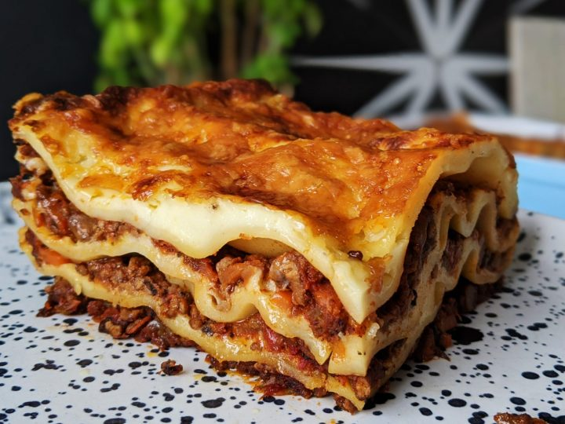

Easy Lasagna

This easy to make lasagne is very popular in
our houshold. With a minimum amount of ingredients and a speedy cooking time makes this
recipe a winner everytime.
Ingredients
- 10 onces lasagna noodles
- 1 1/2 pounds lean ground beef
- 3 cups cottage cheese
- 2 eggs
- 1 teaspoon garlic powder
- 2 tablespoons dried parsley
- salt and pepper to taste
- 1(6 ounce) can tomato paste
- 2(6.5 ounce) cans tomato sauce
Steps
- Preheat oven to 190C/375F
- Bring a large pot of lightly salted water to the boil.
Add lasagne noodles and cook for 8 to 10 minutes.
Once cooked, drain noodles.
- Brown off ground beef
- Using a fork, mix together cottage cheese, eggs, garlic powder,
dried parsley, salt and pepper.
In a seperate bowl combine tomato paste and tomato sauce.
- In a 9x13 inch baking pan, layer noodles, ground beef
tomato sauce mixture and cottage cheese mixture.
Two layers of each will fit.
Cover with tin foil and bake for 30 minutes.
Remove tin foil for the last 8 minutes od baking time.
recipes